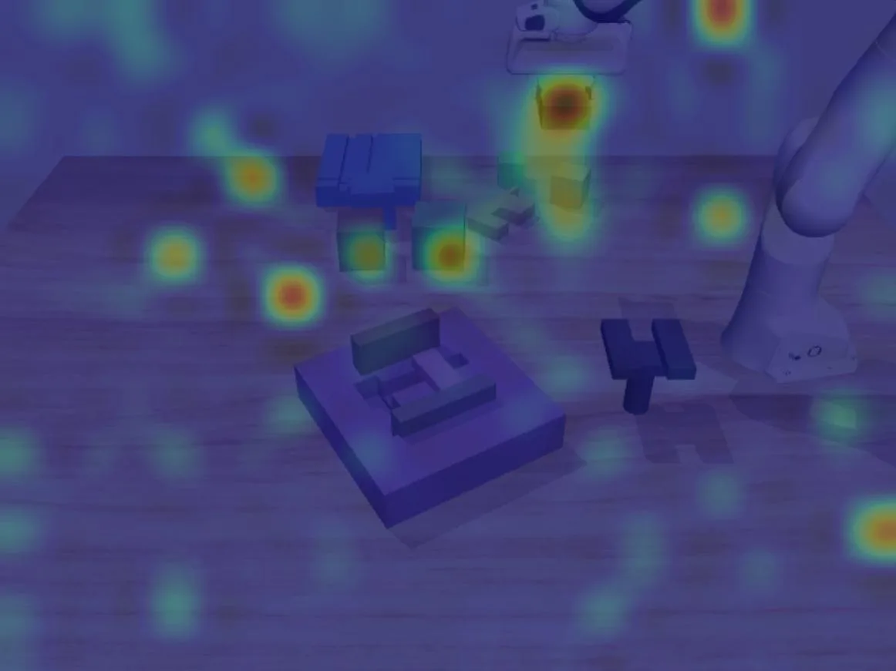
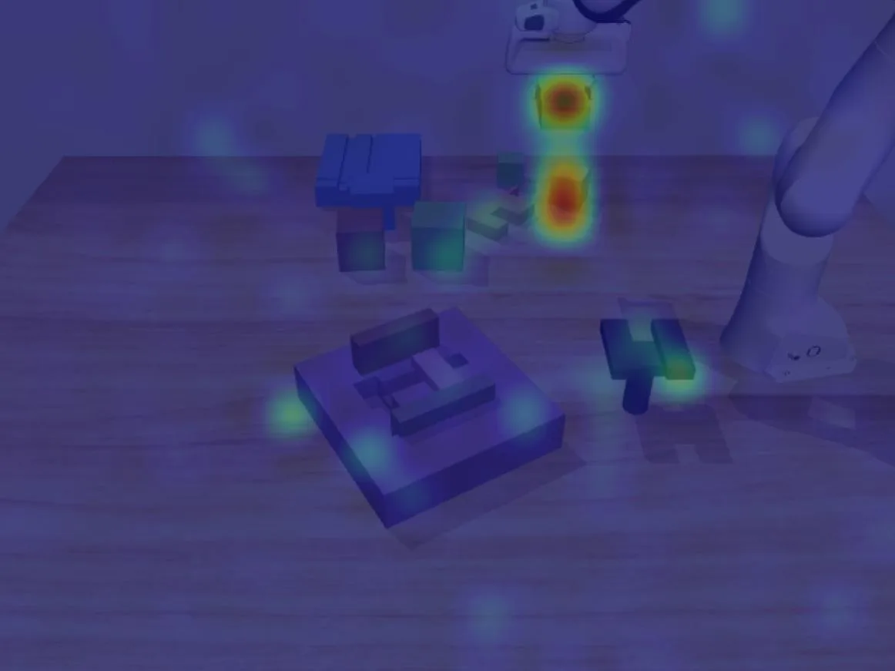
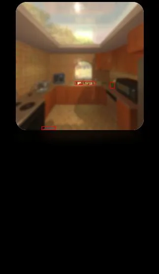
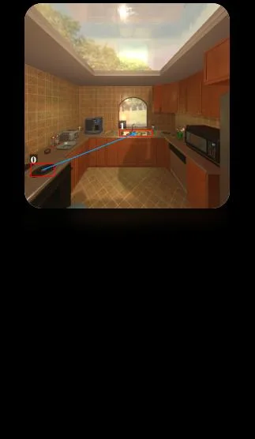
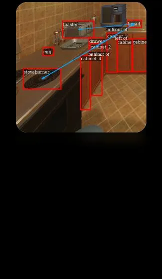

SceneDiver：通过焦点计划生成缓解视觉语言决策的感知瓶颈Dive into the Scene: Breaking the Perceptual Bottleneck in Vision-Language Decision Making via Focus Plan Generation
与语义导航和具身感知相关，但不是几何 SLAM 或定位算法本身，价值主要在高层任务理解。
一句话工作总结
用场景图和分步焦点计划帮助具身智能模型在导航/操作中关注真正任务相关的对象。
摘要
该论文关注具身视觉语言决策中 VLM/VLA 因无法区分任务相关目标和干扰物而产生的视觉幻觉。SceneDiver 先构建整体场景图，再通过识别、理解和分析的迭代过程生成由粗到细的 focus plan，并把这种能力蒸馏到轻量 VLA 适配器中，以提升机器人操控和导航任务中的关键物体聚焦能力。
In embodied vision-language decision making tasks such as robotic manipulation and navigation, Vision-Language and Vision-Language-Action Models (VLMs & VLAs) are powerful tools with different benefits: VLMs are better at long-term planning, while VLAs are better at reactive control. However, their performance is limited by the same perceptual bottleneck: visual hallucinations arise due to the models' inability to distinguish task-relevant objects from distractors. In principle, accurate identification and focus on critical objects while filtering out irrelevant ones is the key to break this limitation. A straightforward solution is one-step focus: directly attending to essential objects. However, this approach proves ineffective because effective focus inherently requires deep scene understanding. To this end, we propose SceneDiver, a coarse-to-fine focus plan generation method for VLMs leveraging their long-term planning abilities, that first constructs a holistic scene graph to establish initial comprehension, then progressively decomposes the task into simpler sub-problems through an iterative cycle of recognition, understanding, and analysis. To enable reactive control, we also design a lightweight adapter for distilling the deliberate focus ability into VLAs. Evaluations on standard embodied AI benchmarks confirm that our method substantially reduces visual hallucinations for both VLMs and VLAs, while preserving computational efficiency in tasks requiring fast execution. Our code and data are released at: https://future-item.github.io/SceneDiver.
图表/页面预览

{kind=link}

{kind=link}

{kind=link}

{kind=link}

{kind=link}
